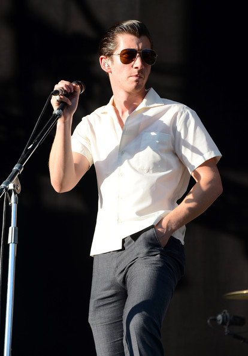
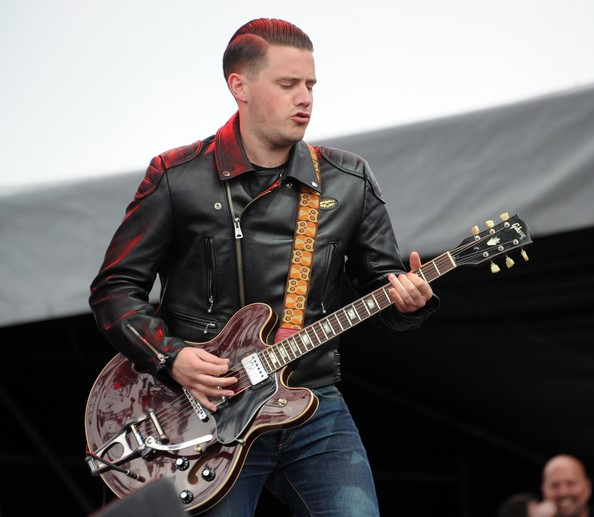
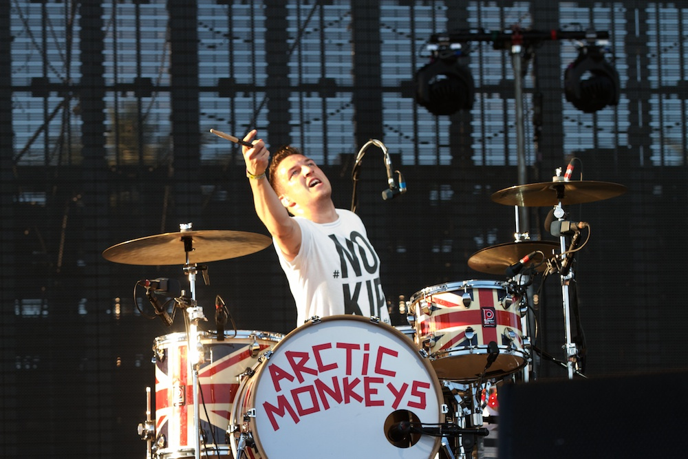
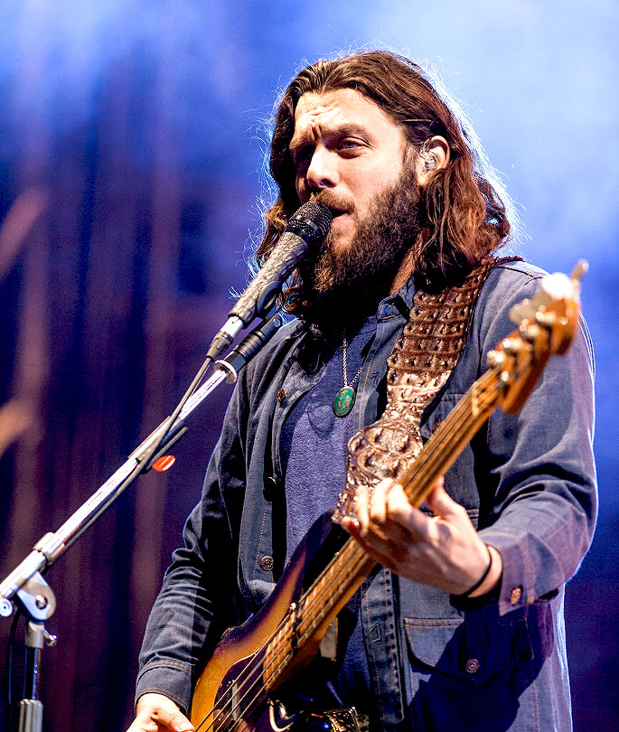

- Home
- Album Anthlogy
- Tours
- Members

Alex Turner
Alexander David Turner (born 6 January 1986) is an English musician, singer, songwriter, and record producer. He is best known as the frontman and principal songwriter of the rock band Arctic Monkeys, with whom he has released six albums. He has also recorded with his side project The Last Shadow Puppets and as a solo artist.
Turner was born and raised in Sheffield, South Yorkshire, the only child of two secondary school teachers. When he was 16, he and three friends formed Arctic Monkeys. Their debut album, Whatever People Say I Am, That's What I'm Not (2006), became the fastest-selling debut album in British history and was ranked at No. 30 on Rolling Stone's list of the greatest debut albums of all time.[1] The band's subsequent studio albums, Favourite Worst Nightmare (2007), Humbug (2009), Suck It and See (2011), AM (2013) and Tranquility Base Hotel & Casino (2018), have experimented with desert rock, indie pop, R&B, and lounge music. Arctic Monkeys headlined Glastonbury Festival in both 2007 and 2013, and performed during the 2012 London Summer Olympics opening ceremony.

Jamie Cook
Originally a next door neighbour of fellow band member Alex Turner, Cook and the other band members picked up their respective instruments and formed the Arctic Monkeys in 2001.
He is the band's most outspoken member, going on record as saying he "fucking hates the [print] news" and defending the band's numerous successive records by stating, "I couldn’t see us being like Coldplay, it’d just be fucking boring. You tour your album for three years and play the same fucking gig night after night. It must really be depressing. Some people might enjoy doing that, but we couldn't.

Mathew Helders
Helders has said that he ended up playing drums as "that was the only thing left. When we started the band none of us played anything. We just put it together. They all had guitars and I bought a drum kit after a bit."[4] However, Helders has mentioned the influence rap music has had on the band, saying "We were rap fans at school more than now ... it still influences us in some ways; like for me, it's the drummin'. The groove element, like foon-keh music."[5] In addition, Helders cites seeing Queens of the Stone Age as the biggest influence on his development as a drummer, saying "the one thing that changed me the most was seeing Queens of the Stone Age live at a festival ... as soon as they came off I was like – 'Fuck, I need to start hitting harder.'

Nick O'Malley
O'Malley was drafted in as a temporary replacement for bassist Andy Nicholson when the latter announced he would not make the band's North America tour in May 2006,[2] while working at Asda.[3] O'Malley says that he learned the whole of the band's debut album in two days of intensive play where he "pretty much didn't even leave the house".[4] His first recordings with the band were on their non-album single "Leave Before the Lights Come On", in which he played bass guitar.
His first appearance with the band came on 25 May, when the band played a secret gig at the Old Blue Last pub in east London.[2] The 120 capacity venue was seen as an opportunity for O'Malley to have a test run before the band's first North American gig in Vancouver on 27 May and festival dates in front of fifteen to twenty thousand people.[4]
https://en.wikipedia.org/wiki/Arctic_Monkeys